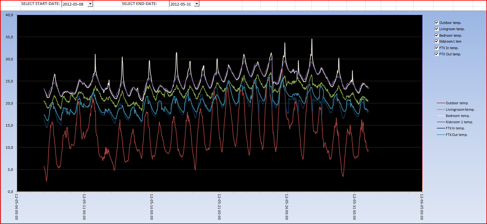

Hi everybody,
I am completely new to OR forum, so probably this topic is already covered elsewhere but I have not be able to find it.
I am planning to deploy a Home Automation system based on KNX / EIB bus in my new home, focusing particularly on energy saving. A KNX/IP interface should connect the KNX network to the intranet.
Primarily 14 temperature sensors and actuators for floor heating, AC load monitoring, HVAC monitoring (only mechanical ventilation)will be installed.
I'd like to set up an OpenRemote controller in a Synology NAS to reduce power consumption.
I am wondering how to setup/program the controller in order to save temperature/status data in time and create graphs necessary for optimize home climate management.
Thanks in advance,
Tom
{kind=link}
{kind=link}
{kind=link}
{kind=link}
|
We are working on a version which allows collecting of data and visualize with graphs. |
|
Thank you Marcus for your answer. As long as my setup will be functional I will strongly contribute to debugging of this feature. Cheers, Tom |
|
I have solved my temperature logging with a rule that saves my temperature readings every hour and half hour to an Excel file. Then I made a chart, where I can choose what temperatures and between which dates I want the graph to appear. I must say it works very well. My only problem is that I haven't found any good way to show the Excel chart in OpenRemote. So the information about the upcoming RRD4J implementation was good news.  If anyone is interested, I attach the rule (modeler_rules.drl). I've had some problems with that the rule sometimes want to save the values several times on each occasion. That's why I added the time check, if you don't get any such problems, just remove that part. You must save the "poi-3.8-20120326.jar" in your "\OpenRemote\webapps\Controller\WEB-INF\lib" library and the Excel file in your "\OpenRemote\bin" library. Temp_log.xls /Kenneth |
|
Hi Kenneth, thanks for sharing this with us. A really nice alternative solution --Marcus |
|
Thank you Marcus. I will check if I can get poi to save the graph as a PNG. |
|
Marcus, |
|
The EvenProcessorChain and the EvenProcessor interface are there for a task like this. |